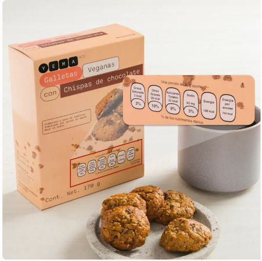
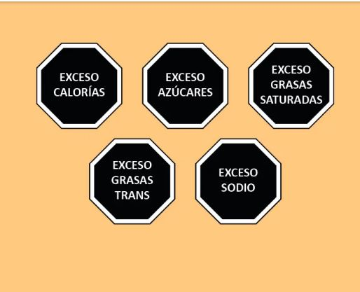
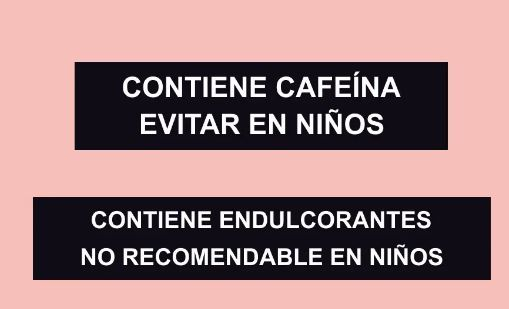
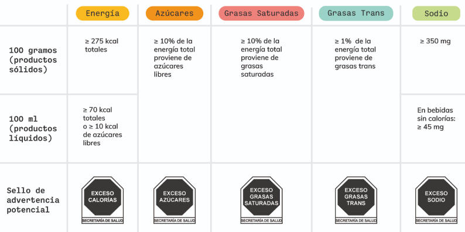
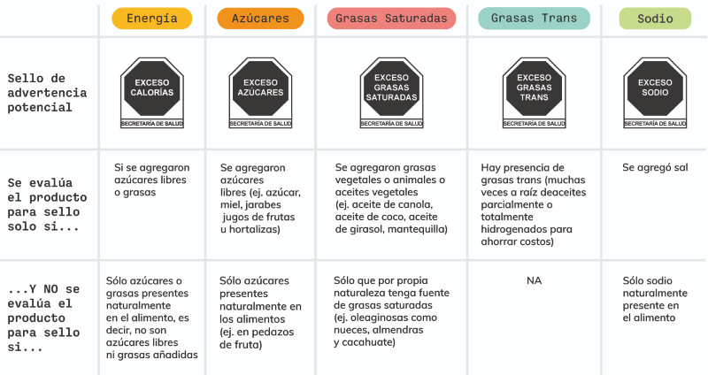
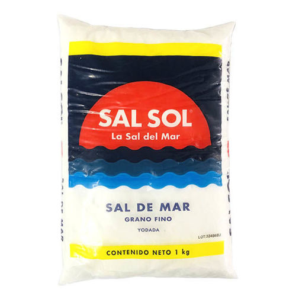
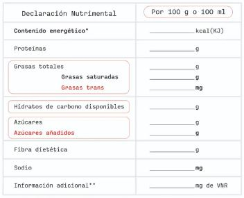
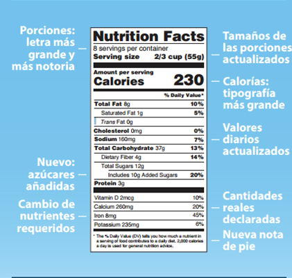
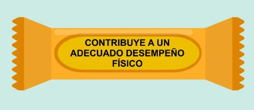

10 cosas que debes saber sobre las nuevas etiquetas en los alimentos.
¿Has notado que ahora varios productos tienen sellos negros en sus envases? Y si aún no lo has notado, muy
pronto te darás cuenta, pues a partir del 1ero de octubre del 2020 entrará en vigor la nueva norma de
etiquetado.
Esto se debe a que el 70% de las personas padecen sobrepeso y una tercera parte de las personas con sobrepeso
también sufren de obesidad, calificando a nuestro país en el 2do lugar en obesidad adulta y en 1er lugar en
obesidad infantil a nivel mundial.
La sustitución de etiquetado en varios productos, que se ofrecen en “tienditas” y supermercados del país ha
comenzado, pues su función es alertar a la población de los niveles calóricos que contienen dichos empaques
alimenticios.
Pero lo que deberias saber es esto:
1. Ya NO se usarán los sellos frontales actuales
Durante los últimos años, se ponían en los envases de los productos sellos frontales llamados Guía Diaria de
Alimentación (GDA). Éstos señalaban el porcentaje de ciertos nutrimentos presentes en una porción del producto
en base a una dieta diaria de 2,000 calorías.

2. Se implementarán 5 sellos de advertencia para calorías, sodio, grasas trans,
grasas saturadas y azúcares, y 2 leyendas precautorias para cafeína y edulcorantes
Llegó el momento de la verdad, los tan famosos octágonos negros que empiezan a aparecer en los productos y que
muy pronto los verás en todas partes. Estos sellos a diferencia de los GDA, buscan ser sellos de advertencia.
Es por eso que son mucho más llamativos y fáciles de entender.


3. Los excesos se definirán según una cantidad establecida de 100g o 100ml
Cada sello advierte de un exceso con base en cantidades de ciertos ingredientes encontrados en 100g o 100ml de
los alimentos, definiendo una proporción a no rebasar para no estar considerado en exceso. Para cada producto
en el que se haya añadido azúcar, grasa o sodio, se evalúa si rebasa o no esta proporción.

4. Sólo se evaluarán los productos a los cuales se les agregaron sodio, grasa o azúcar
Se evalúan las cantidades de azúcares libres, grasas, sodio, y calorías solamente si se agregó al alimento azúcares libres, grasas o sodio.
Por lo tanto, la nueva norma no requiere que se mida siempre el contenido total de calorías, azúcares, grasas saturadas, o sodio, un alimento puede estar alto en azúcares, grasas o sodio, pero no haber un sello de advertencia en su envase.

5. Los alimentos de un sólo ingrediente no llevarán sellos
Aunque puedan ser 100% azúcar, grasa o sodio, los alimentos que contienen un sólo ingrediente no llevarán sellos; miel de agave, aceite de oliva, o sal de mesa son ejemplos de productos que no estarían evaluados para sellos.

6. La tabla nutrimental será por 100g en vez de ser por porción, y mostrará el detalle de azúcares añadidos y de grasas trans.
Otro cambio significativo es la nueva tabla nutrimental, la cual se encuentra en la parte trasera del envase.
Actualmente declara la cantidad de nutrimentos que tiene un alimento o una bebida por porción. La desventaja es que no se puede hacer una comparación entre productos ya que pueden presentar diferentes porciones.

7. Las tablas por 100 g o 100 ml sólo ayudan a comparar entre productos, como si fueran porcentajes, NO son una porción, NO indican que solo hay exceso si se consumen los 100g o 100ml.
Los sellos de advertencia se evalúan según el porcentaje de azúcar, sodio y grasa que se encuentra en un producto. Si hay 20 g de azúcar en 100 g de pastel, independiente del tamaño de la rebanada que me como, siempre tendrá 20% de azúcar.
Las tablas por 100 g y 100 ml deberían ser un alivio para los que no somos tan buenos con las matemáticas. Por ejemplo, podemos fácilmente comparar un jugo con un refresco porque ambos declaran sus nutrimentos por 100 ml, o comparar un paquete de galletas con una bolsa de chips porque ambos declaran por 100 g.

8. Adiós al osito del pan y al tigre de las frituras.
Con la finalidad de proteger las elecciones de los niños, los productos con uno o más sellos de advertencia o leyendas precautorias, no podrán incluir en su etiqueta personajes infantiles, animaciones, dibujos animados, celebridades, deportistas o mascotas, ni elementos interactivos.
9. Ya no se podrán colocar avales de asociaciones si el producto tiene al menos un sello de advertencia
Se puede contar con aval siempre y cuando, no contengan sellos de advertencia y presenten la documentación apropiada que soporte con evidencia científica el perfil nutrimental del producto. Así, cuando te encuentres un producto que tenga algún aval de alguna asociación, sabes que es un producto totalmente honesto.
10. No más declaraciones saludables en productos con sello de advertencia.
Otro de los objetivos es evitar percepciones erróneas en las etiquetas. Así que la cantidad del nutrimento o componente del alimento con beneficios deberá estar en las concentraciones adecuadas. Por ejemplo, no se podrá poner “bajo en calorías” si existe un sello de advertencia en calorías.

Ahora vamos a revisar algunos productos,Dale click a la seccion que quieras checar.